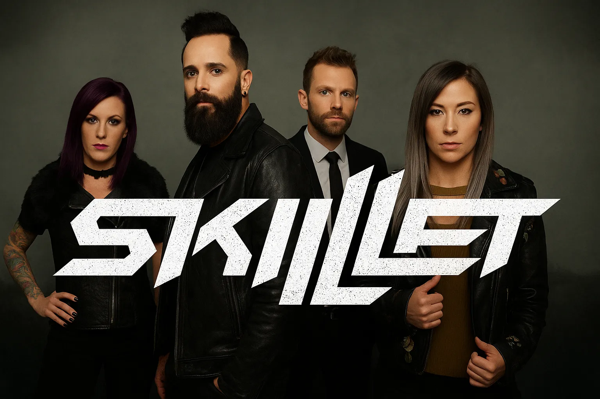
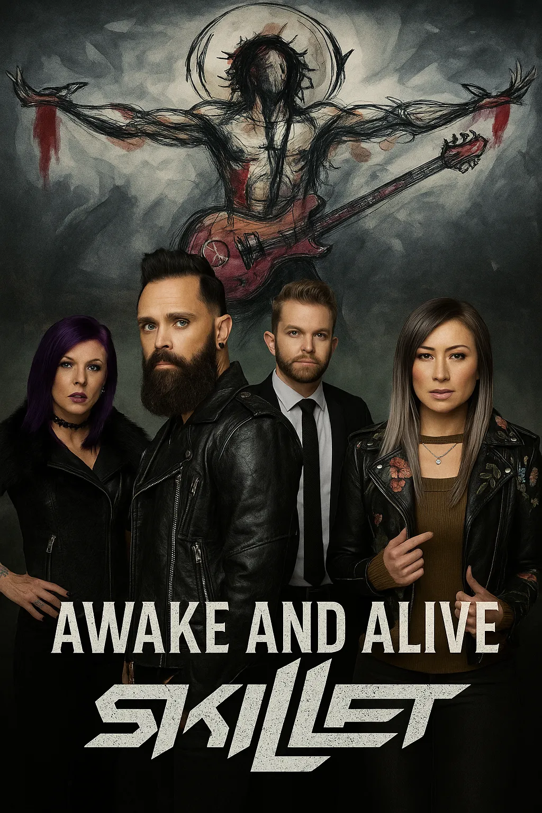

-convertido-de-jpeg.webp)
-convertido-de-jpeg.webp)
-convertido-de-jpeg.webp)
-convertido-de-jpeg.webp)
Galeria de Fotos



Skillet em apresentação ao vivo, destacando a energia intensa e os efeitos visuais dos shows. Skillet é uma banda americana de rock cristão formada em 1996 em Memphis, Tennessee.O grupo combina elementos de hard rock e metal alternativo com melodias cristãs, criando um som pesado e melódico. Sua música é marcada por energia intensa e letras inspiradoras, o que conquistou fãs pelo mundo. Desde a estreia,a banda já lançou doze álbuns de estúdio, todos com grande sucesso comercia

Skillet foi fundada em 1996 pelos músicos John Cooper e Ken Steorts como um projeto paralelo de louvor na igreja local. Inspirados por seu pastor, que sugeriu tocar rock cristão, eles escolheram o nome “Skillet” como uma brincadeira – o pastor teria dito que seu som era como misturar vários ingredientes numa frigideira (“skillet” em inglês). O primeiro álbum (Skillet, 1996) levou a banda a assinar com o selo ForeFront Records, mas logo ocorreram mudanças na formação. Ken Steorts deixou a banda em 1999, e novos membros entraram para substituir outros que saíram ao longo dos anos
Skillet foi fundada em 1996 pelos músicos John Cooper e Ken Steorts como um projeto paralelo de louvor na igreja local. Inspirados por seu pastor, que sugeriu tocar rock cristão, eles escolheram o nome “Skillet” como uma brincadeira o pastor teria dito que seu som era como misturar vários ingredientes numa frigideira (“skillet” em inglês). O primeiro álbum (Skillet, 1996) levou a banda a assinar com o selo ForeFront Records, mas logo ocorreram mudanças na formação. Ken Steorts deixou a banda em 1999, e novos membros entraram para substituir outros que saíram ao longo dos anos
Skillet mistura rock cristão com influências de hard rock, metal alternativo e até elementos de nu-metal, criando músicas de riffs pesados e refrãos contagiantes. Algumas faixas incorporam também teclados e arranjos orquestrais, dando um toque sinfônico ao som em certas passagens. As letras frequentemente abordam temas de fé, superação e esperança, refletindo experiências pessoais e crenças dos integrantes. Essa combinação única permitiu que a banda alcançasse tanto o público cristão quanto fãs de rock pesado em geral.